Interactive \
Charles Schwab
_Conceptual interactive media with attract loop in engagement areas, waiting areas, vertical totems & web terminals placed within Charles Schwab's two new flagship branch in NYC (engagement & waiting area interaction shown) / July.11
Medium_42" touch screen engagement area, Ipad installed waiting area, touch screen vertical totems & computer web terminals.
 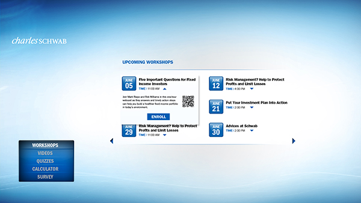
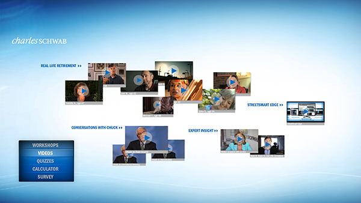
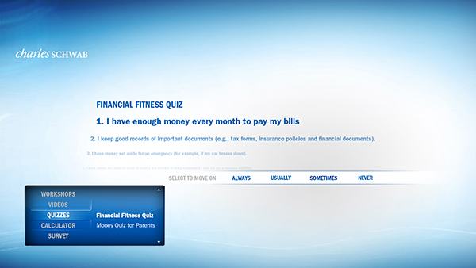
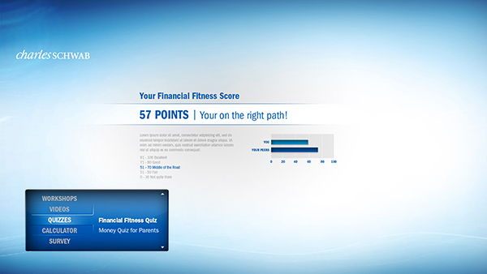
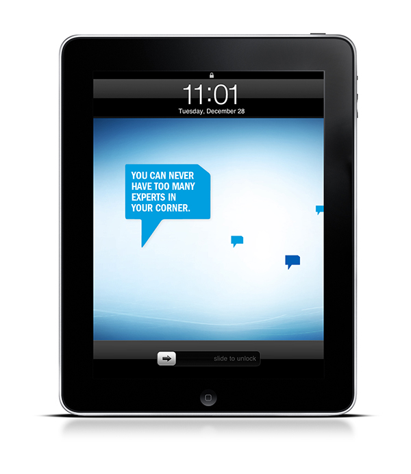
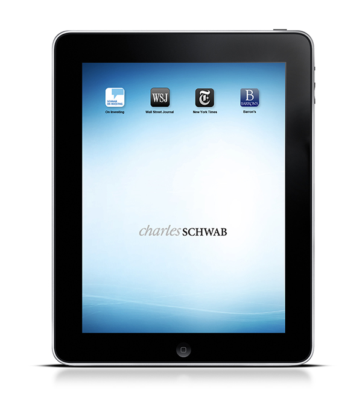
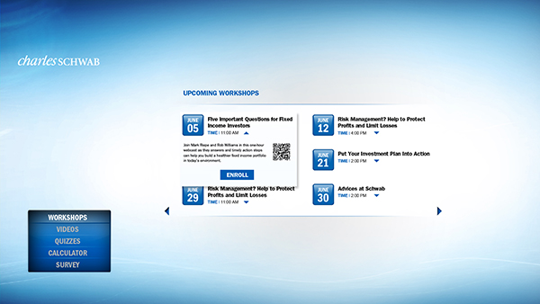
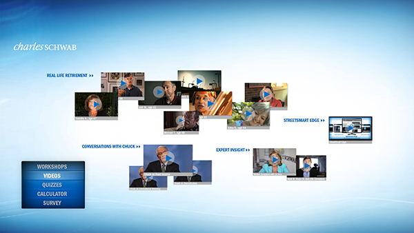
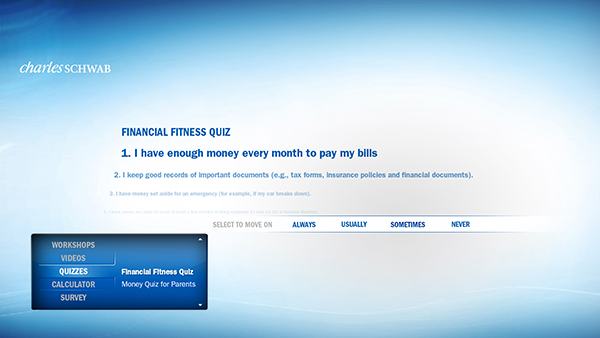
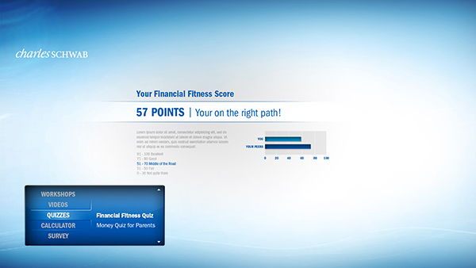
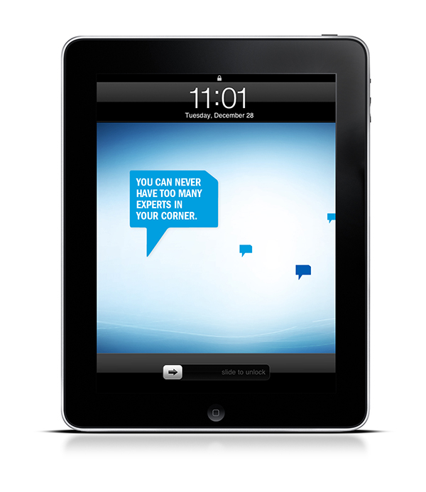
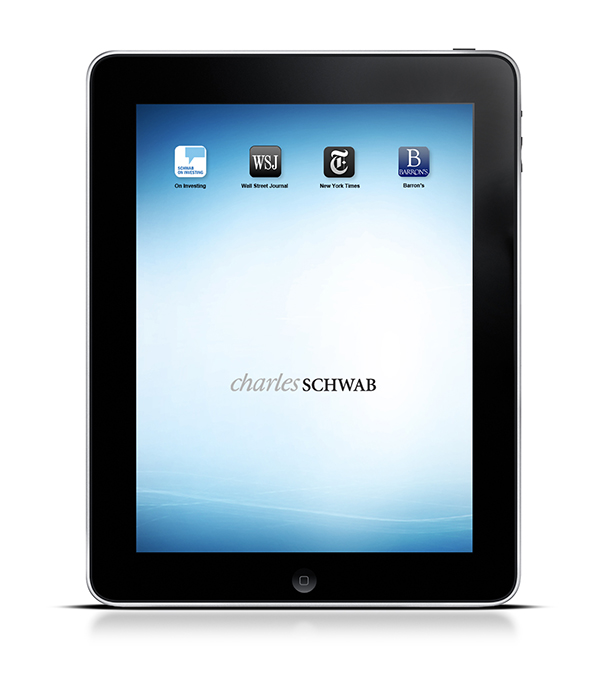
Santana Row
_Conceptual interactive one touch user experience for a kiosk in Santana Row. Interface includes a map & directory with twitter feed from The Row and promotional ads & events / March.12
Medium_46" touch screen kiosk
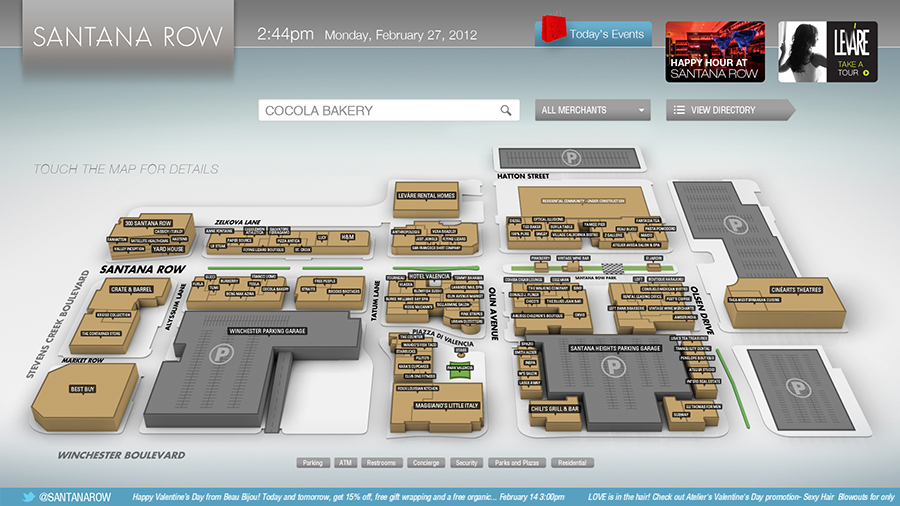
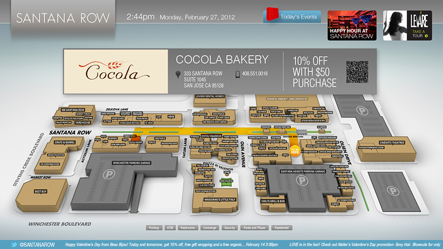